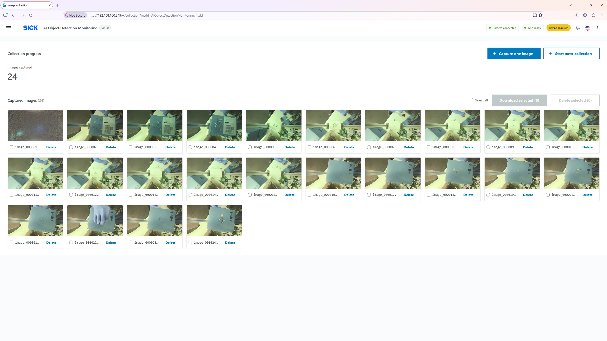
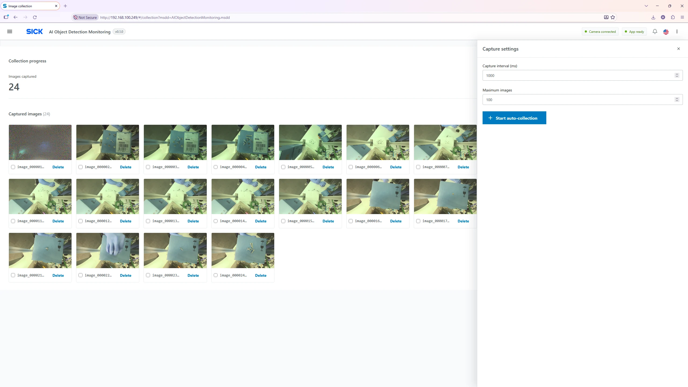
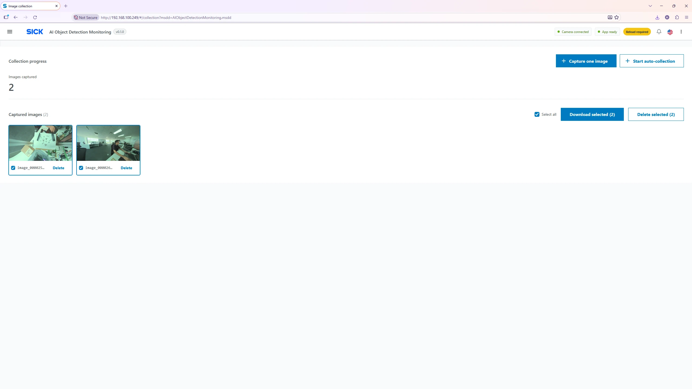

Image Collection Page
Collect images directly from the camera for later annotation or retraining. Images are stored on the device until removed. This page is separate from normal live preview and detection.

Capture modes
| Control | Behavior |
|---|---|
| Capture image | Requests one new camera image, even when automatic collection is not running, provided the camera is available. |
| Start collection | Opens a panel to choose the capture interval and maximum new images; collection then runs automatically. |
| Stop auto | Stops a running timed session. Previously stored images remain. |
| Captured | Count of images currently stored in the collection (existing images are retained between sessions). |
| Gallery | Shows thumbnails and filenames. Click a thumbnail to open the original image in a new browser tab. |
| Select all / individual checkbox | Choose files for download or deletion. |
| Download selected |
Creates a temporary ZIP for selected images and downloads it
as dataset.zip; original images are kept.
|
| Delete selected / Delete | Permanently removes chosen saved images after confirmation. |
Collect a series automatically
- Point the camera at the objects or scenes you want to use as examples. Ensure the camera is connected.
- Click Start collection to open the configuration panel.
- Choose Interval (ms) (100–60,000) and Maximum images (1–10,000). For example, an interval of 1,000 ms captures approximately one frame per second while active.
- Click Start collection inside the panel. The capture count and gallery update as images arrive.
- Collection stops automatically after the new-image target is met; alternatively click Stop auto. Keep sufficient device storage available.
- Select representative images, click Download selected, save the ZIP on your PC, then remove unnecessary images from the camera.

Single image / selecting and deleting
Choose Capture image to take one image immediately (capture may complete asynchronously). Tick one or more image cards, then use Download selected to export or Delete selected to remove. The delete action opens a confirmation dialog. Removal is unavailable while a timed session or capture is pending.

Image format and storage
The full-resolution collection images are stored as lossless RGB PNG on the camera; this is separate from lower-resolution compressed JPEG previews shown in Monitoring. Captured images are not automatically annotated or trained by this application. They can be exported for SICK DTag/DStudio processing or another supported offline workflow.